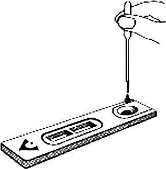
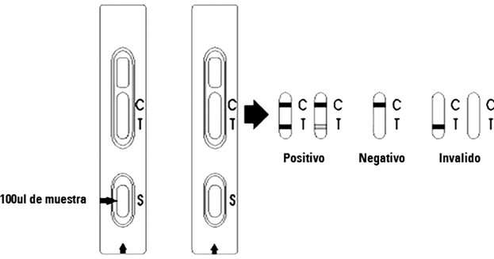

One step anti-vih (1+2) test (sangre total, suero o plasma)
DESCRIPCIÓN: Prueba rápida para determinación cualitativa de anticuerpos del virus de la inmunodeficiencia humana (VIH-1&2) en sangre total, suero o plasma.
PRINCIPIO: El ensayo se inicia con la aplicación de la muestra problema al pocillo de muestra. El antígeno de VIH conjugado con oro-coloidal embebido en el pocillo de muestra reacciona con los anticuerpos de VIH presentes en la sangre, suero o plasma formando el complejo anticuerpo-VIH/conjugado. La mezcla emigra a lo largo de la tira de prueba formando un complejo anticuerpo-VIH/conjugado, el cual es capturado por un antígeno de VIH recombinante inmovilizado en una membrana y formando una banda coloreada en la región de prueba. Una muestra negativa no produce una banda coloreada debida a la ausencia del complejo conjugado de oro coloidal–anticuerpos VIH.
FORMATO: Cassette.
MUESTRA: Suero, plasma o sangre total.
PROCEDIMIENTO:

INTERPRETACIÓN:

TIEMPO DE RESULTADOS: 3 a 10 minutos.
PRESENTACIÓN: 50 pruebas.
CADUCIDAD: 18 meses.
Registro: 1506R2007 SSA
DATOS COMPLEMENTARIOS: Para mayores informes comunicarse a:
ACCUTRACK, S.A. DE C.V.
Teléfonos: (55) 5524-4481, 5524-2644, 5524-4575
e-mail: ventas@accutrack.com.mx
www.accutrack.com.mx